WHAT IS IMAGIAN?
Imagian is a constructed language.
It's a language in the sense that it's a system of communication using abstract symbols (called words for convenience). It can't be actually spoken.
Its words consist of one or more symbols. Words are separated by spaces. Most symbols' shape is derived from their basic meaning, long words' meaning is derived from basic meanings of their symbols.


The symbols like these are "pictograms", depicting the very thing they mean.
Other symbols are "ideograms", they stand for more abstract things and depict things associated with what they mean.

Space, time
The symbol for "time" depicts a stopwatch and a hourglass. The symbols for "space" depicts three coordinate axes.
Other ideograms combine symbols of different things to convey a more abstract meaning.


 Tools: an axe, a hammer, a knife, a shovel.
Tools: an axe, a hammer, a knife, a shovel.

The symbol for "time" depicts a stopwatch and a hourglass. The symbols for "space" depicts three coordinate axes.
Other ideograms combine symbols of different things to convey a more abstract meaning.
A square border is found in many symbols.
Sometimes it's just a decoration, other times it is needed to distinguish between a pictogram and an ideogram associated with it.
 
Scales: to trade.

Scales: to trade.
Tool: to use.

 Plus: to add.
Plus: to add.
Specific meanings of ideograms can be looked up in WRITE. There’s no sense in remembering how exactly each one is drawn, because Imagian is not supposed to be written by hand.

Specific meanings of ideograms can be looked up in WRITE. There’s no sense in remembering how exactly each one is drawn, because Imagian is not supposed to be written by hand.